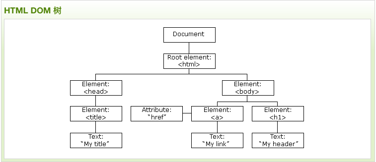

HTML DOM 模型被构造为对象的树
Hello
Hello World!
Hello World!
我的标题 1
点我!
点击文本！
当前时间
当前时间
输入你的名字:
当你离开输入框后，函数将被触发，将小写字母转为大写字母。
Mouse Over Me
Thank You
单个事件
多个事件
传递参数
点击段落，我是冒泡。
点击段落，我是捕获。
HTML DOM Event 对象参考手册。
完整的HTML DOM 教程。